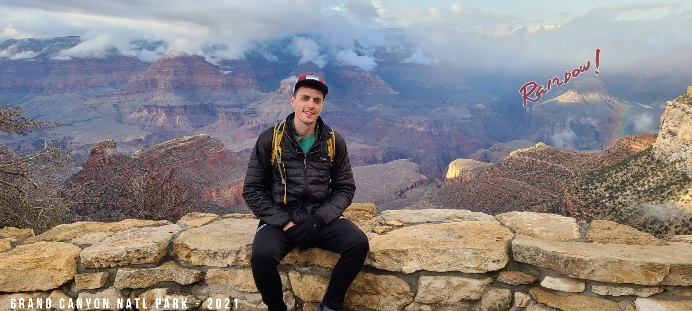

👋 Hey there!
I'm Kyle Mueller. I'm a Senior Software Engineer at Principal.
I spend my daytime solving fintech problems in AWS. I spend my nighttime rock climbing or reading sci-fi & fantasy. I like to spend my time-off hiking in cool places. All other time likely spent running with the Java Joggers Running Club.
📍 Based in beautiful Des Moines, IA.